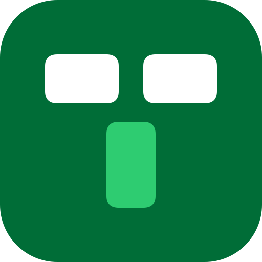

O carro certo, perto de você. Pessoa a pessoa, sem intermediário.
Por que três peças? O Triluga não intermedeia: ele junta duas pontas. O símbolo conta isso construindo a letra com blocos separados que se encaixam.
Por que Inter Bold reto? Leitura limpa em qualquer tamanho, e continuidade com a fonte já usada no app. Em tamanhos muito pequenos, o símbolo sozinho (logo-mark.svg) é melhor que o logo completo.
Cores: o verde escuro #006d37 é o primário do app, com ótimo contraste no branco. O verde claro #2ecc71 aparece só na peça de baixo do T. A fonte, Inter Bold, é livre para uso comercial (licença OFL).

O Triluga conecta quem tem um veículo parado a quem precisa de um. Combine direto, sem burocracia e sem intermediários.
// tailwind.config.js
colors: {
brand: {
primary: '#006d37',
surface: '#FFFFFF',
border: '#D9E3DC',
muted: '#5B6B62',
accent: '#2ecc71',
}
}